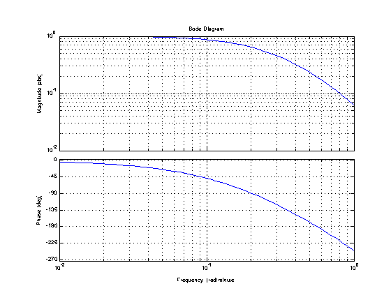
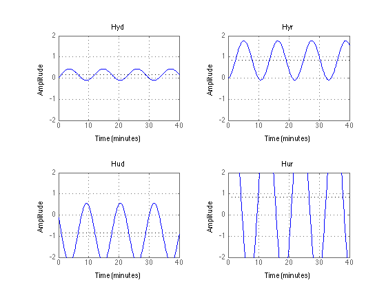
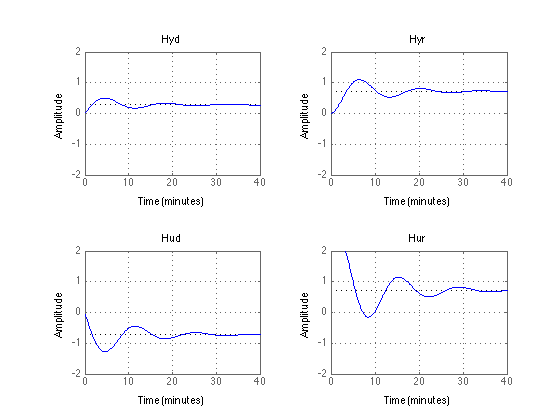
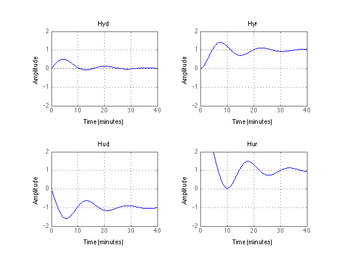
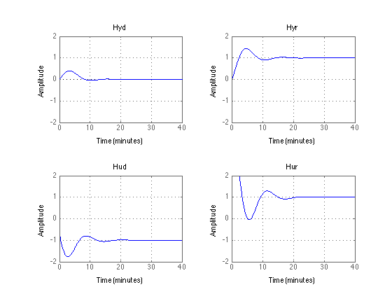
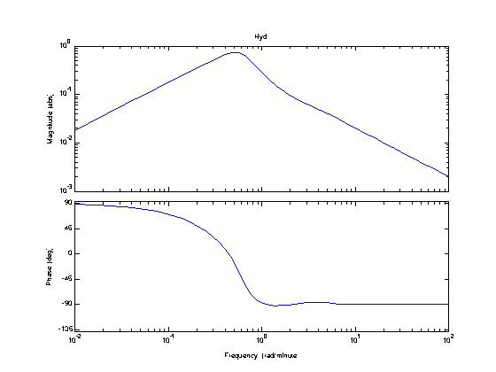
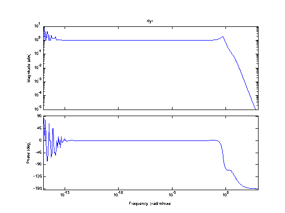

PID Control
File: Ch12_PID.m
Topics:
* PID Control * Tuning Rules
To use the publish function with these notes, be sure you have the displaytable.m from the CBE30338 Utilities folder. Also, please note these notes use the Control Systems Toolbox, and require a reasonably current version of Matlab.clear all
Contents
SEMD Example 11.4 with Time Delay
The following diagram shows the basic elements of a feedback control system. The notation follows from Figure 11.8 of the SEMD textbook.
_______
Disturbance | |
d(s) --->| Gd(s) |-----
|_______| |
______ _______ _______ v
Setpoint + _ | | | | | | _ + Output
r(s) -->|_|--->| K(s) |--->| Gv(s) |--->| Gp(s) |--->|_|-----> y(s)
^ - |______| |_______| |_______| + |
| Controller Valve/Actuator Process |
| _______ |
| | | |
-----------------| Gm(s) |----------------------
|_______|
MeasurementTransfer functions
Process
Gp = tf([1],[5 1],'TimeUnit','minutes')
Gp =
1
-------
5 s + 1
Continuous-time transfer function.
Disturbance
Gd = Gp
Gd =
1
-------
5 s + 1
Continuous-time transfer function.
Valve Actuator
Gv = tf([1],[2 1],'TimeUnit','minutes')
Gv =
1
-------
2 s + 1
Continuous-time transfer function.
Measurement with Time Delay
Gm = tf([1],[1 1],'ioDelay',1,'TimeUnit','minutes')
Gm =
1
exp(-1*s) * -----
s + 1
Continuous-time transfer function.
Gain Margin
Given the product of transfer functions Gm*Gp*Gv, the gain margin is the critical value of Kp for which the closed-loop becomes unstable. That critical value is also called the 'ultimate gain' Kcu.
The gain margin can be found from the Bode plot for Gm*Gp*Gv.
p = bodeoptions; p.FreqUnits = 'rad/minute'; p.MagUnits = 'abs'; p.MagScale = 'log'; w = logspace(-2,0); bodeplot(Gm*Gp*Gv,w,p); grid;
Exercise: Use the Bode plot to estimate the cross-over frequency and Kcu.
Ultimate Gain and Period
- Kcu, the ultimate control gain, is the value proportional for which the closed loop system exhibits a sustained oscillation. This is equal in value to the gain margin.
- Pu, the ultimate period, is the period of sustained oscillation when the proportional control gain is Kcu.
- he gain margin and the cross-over frequency can be computed with the Matlab function margin.
[gmargin,~,wco] = margin(Gm*Gp*Gv);
displaytable([gmargin;wco],{'Gain Margin';'Crossover Freq [rad/min]'});
Kcu = gmargin;
Pu = 2*pi/wco;
displaytable([Kcu;Pu],{'Kcu';'Pu'});
% Closed-loop transfer function at the Ultimate Gain
K = tf([Kcu],[1],'TimeUnit','minutes');
Hyd = Gd/(1 + Gp*Gv*K*Gm);
Hyr = Gp*Gv*K/(1 + Gp*Gv*K*Gm);
Hud = -K*Gd/(1 + K*Gm*Gp*Gv);
Hur = K/(1 + K*Gm*Gp*Gv);
% Plot Step Responses
t = 0:0.1:40;
ax = [min(t) max(t) -2 2];
subplot(2,2,1);step(Hyd,t);axis(ax);grid;title('Hyd');
subplot(2,2,2);step(Hyr,t);axis(ax);grid;title('Hyr');
subplot(2,2,3);step(Hud,t);axis(ax);grid;title('Hud');
subplot(2,2,4);step(Hur,t);axis(ax);grid;title('Hur');
Gain Margin 5.1215 Crossover Freq [rad/min] 0.56032 Kcu 5.1215 Pu 11.213
Observations
- Marginal stability. Try increasing and decreasing Kp to see what happens.
- Period of Oscillation corresponds to the cross over frequency.
Ziegler-Nichols Tuning Rule: P
The Ziegler-Nichols tuning rules are shown in Table 12.4 on page 224 of the SEMD textbook. The proportional-only control, the control gain is set to 1/2 of the ultimate gain determined by experiment or from the Bode polot.
Kp = 0.5*Kcu; displaytable(Kp,'Kp'); K = tf([Kp],[1],'TimeUnit','minutes'); % Closed-loop transfer functions Hyd = Gd/(1 + Gp*Gv*K*Gm); Hyr = Gp*Gv*K/(1 + Gp*Gv*K*Gm); Hud = -K*Gd/(1 + K*Gm*Gp*Gv); Hur = K/(1 + K*Gm*Gp*Gv); % Plot Step Responses t = 0:0.1:40; ax = [min(t) max(t) -2 2]; subplot(2,2,1);step(Hyd,t);axis(ax);grid;title('Hyd'); subplot(2,2,2);step(Hyr,t);axis(ax);grid;title('Hyr'); subplot(2,2,3);step(Hud,t);axis(ax);grid;title('Hud'); subplot(2,2,4);step(Hur,t);axis(ax);grid;title('Hur');
Kp 2.5607
There are several problems with this proportional-only controller
- The step responses are underdamped
- Steady state offset is evident in the disturbance and setpoint responses.
- Significant control action is required for the setpoint response.
With proportional-only control there is an unfortunate tradeoff between damping and offset.
Ziegler-Nichols Tuning Rule: PI
Integral control eliminates offset. Ziegler-Nichols tuning rule (Table 12.4, page 224)
% Ultimate gain, crossover frequency, and ultimate period [Kcu,~,wco] = margin(Gm*Gp*Gv); Pu = 2*pi/wco; % Ziegler-Nichols PI Tuning Rules Kp = 0.45*Kcu; Ti = Pu/1.2; displaytable([Kp;Ti],{'Kp';'Ti'}); % PI Controller P = Kp*tf([1],[1],'TimeUnit','minutes'); I = Kp*tf([1],[Ti 0],'TimeUnit','minutes'); K = P + I; % Closed-loop transfer functions Hyd = Gd/(1 + Gp*Gv*K*Gm); Hyr = Gp*Gv*K/(1 + Gp*Gv*K*Gm); Hud = -K*Gd/(1 + K*Gm*Gp*Gv); Hur = K/(1 + K*Gm*Gp*Gv); % Plot Step Responses t = 0:0.1:40; ax = [min(t) max(t) -2 2]; subplot(2,2,1);step(Hyd,t);axis(ax);grid;title('Hyd'); subplot(2,2,2);step(Hyr,t);axis(ax);grid;title('Hyr'); subplot(2,2,3);step(Hud,t);axis(ax);grid;title('Hud'); subplot(2,2,4);step(Hur,t);axis(ax);grid;title('Hur');
Kp 2.3047 Ti 9.3446
Observations
- Steady state offset is gone (due to integral action).
- Step responses are still underdamped.
- Significant control action is required for the setpoint response.
Take time to do a careful comparison. Try changing the control parameters to see what happens when you increase and decrease the integral time constant.
Ziegler-Nichols Tuning Rule: PID
Derivative action is used to increase damping. The increased damping also allows somewhat larger proportional control gains and shorter integral time constants. Ziegler-Nichols tuning rule (Table 12.4, page 224)
% Ultimate gain, crossover frequency, and ultimate period [Kcu,~,wco] = margin(Gm*Gp*Gv); Pu = 2*pi/wco; % Ziegler-Nichols PID Tuning Rules Kp = 0.6*Kcu; Ti = Pu/2; Td = Pu/8.0; N= 10; displaytable([Kp;Ti;Td;N],{'Kp';'Ti';'Td';'N'}); % PID Controller P = Kp*tf([1],[1],'TimeUnit','minutes'); I = Kp*tf([1],[Ti 0],'TimeUnit','minutes'); D = Kp*tf([Td 0],[Td/N 1],'TimeUnit','minutes'); K = P + I + D; % Closed-loop transfer functions Hyd = Gd/(1 + Gp*Gv*K*Gm); Hyr = Gp*Gv*K/(1 + Gp*Gv*K*Gm); Hud = -K*Gd/(1 + K*Gm*Gp*Gv); Hur = K/(1 + K*Gm*Gp*Gv); % Plot Step Responses t = 0:0.1:40; ax = [min(t) max(t) -2 2]; subplot(2,2,1);step(Hyd,t);axis(ax);grid;title('Hyd'); subplot(2,2,2);step(Hyr,t);axis(ax);grid;title('Hyr'); subplot(2,2,3);step(Hud,t);axis(ax);grid;title('Hud'); subplot(2,2,4);step(Hur,t);axis(ax);grid;title('Hur');
Kp 3.0729 Ti 5.6067 Td 1.4017 N 10
Observations
- Better tracking to steady state
- Better damping
- Significant control action is still required for the setpoint response.
Take time to do a careful comparison. Try changing the control parameters to see what happens when you increase and decrease the control parameters.
Closed Loop Transfer functions
Examine Bode plots for the closed-loop transfer functions. Can you see the relationships between these plots and the observed step responses?
figure(1);clf; bodeplot(Hyd,p); title('Hyd'); figure(2);clf; bodeplot(Hyr,p); title('Hyr'); 